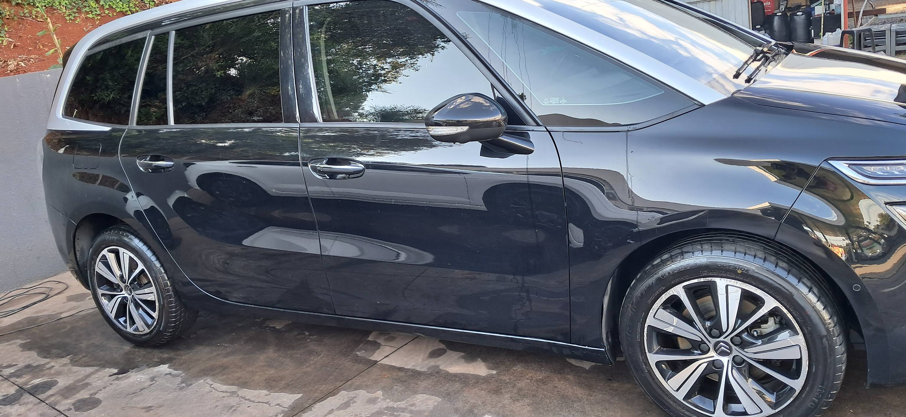
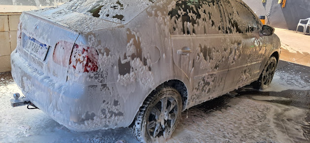
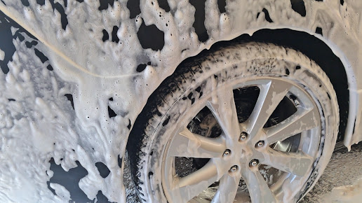

Lavação automotiva • Pato Branco
Seu carro
limpo.
Seu dia
mais leve.
Atendimento na Avenida Tupi, anexo ao Posto GP, com cuidado em cada detalhe do seu veículo.

01 — Golfinho Lavacar
Cuidado que vai
até os detalhes.
O Golfinho Lavacar está localizado na Avenida Tupi, em Pato Branco, anexo ao Posto GP.
O comentário público disponível destaca justamente o cuidado com o veículo e a atenção da equipe aos detalhes.
Ver avaliação real ↘
Fotos reais do estabelecimento02 — Serviço confirmado
Lavação
automotiva.
Limpeza do veículo com atenção ao processo e aos detalhes. Entre em contato para confirmar modalidades, valores e disponibilidade.
Um olhar mais próximo
Limpeza não é só
aparência.
É o cuidado que se percebe nos pontos que mais acumulam sujeira e fazem diferença no resultado final.

“Melhor posto de lava car da cidade, cuidado com o veículo, pessoal que cuida de todos os detalhes, super recomendo!
03 — Onde estamos
Na Avenida Tupi,
Vila Isabel.
Av. Tupi, 1173
Vila Isabel
Pato Branco - PR
CEP 85504-288
Confirme a disponibilidade da lavação antes de se deslocar.
Traçar rota ↗Agendamento facilitado
Vamos deixar seu
carro em dia?
Preencha os dados abaixo. Ao enviar, o WhatsApp do Golfinho Lavacar será aberto com a mensagem pronta.
Prefere ligar?(42) 99102-2264